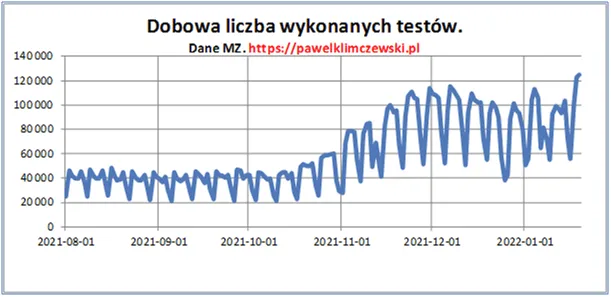
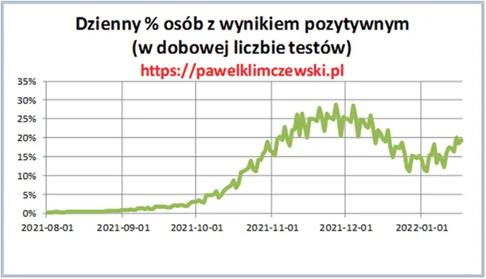
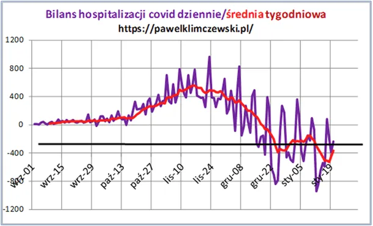
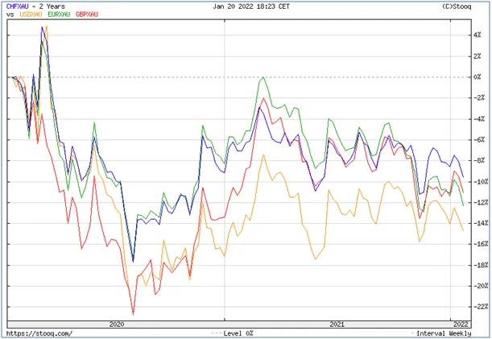

V fala, a pacjenci gdzie?
Nie liczę fal z prostego powodu, nie było pierwszej, to się nie da liczyć drugiej itd...
Zanim do rzeczy zacznę starą mantrę, bo w ministerstwie zapomnieli, że ludzie są śmiertelni. Co dzień w Polsce od lat umierało ok. 1250 osób. Obecnie kilkaset więcej z powodów innych niż covid. "Na covid", wg. MZ średnio w ciągu ostatnich 7 dni umierało 79 osób dziennie. Zmarli "Z covid" to dokładnie tyle samo procent spośród reszty zgonów jak plusów u osób testowanych na izbach przyjęć: 1500 zgonów *20% "plusów" = +-300 "Z covid".

Jest poruszenie, bo znowu 30 000 zakażeń itp. Powtarzam od samego początku tej hecy: nie znamy liczby zakażonych, bo nikt nie robi w tym kierunku badań reprezentatywnych. To, co wiemy to liczba pozytywnych testów wśród osób stykających się ze służbą zdrowa. Gdyby badano losowo ludność to znalibyśmy procent zakażonych Polaków, ale od dwóch lat znamy tylko % spośród trafiających w objęcia machiny testującej.
CDC, amerykańska agenda rządowa ds. zdrowia potwierdza po części moje przypuszczenia, że te testy wykrywają wiele różnych patogenów przeziębieniowych, bo wykres procenta "plusów" dokładnie pokrywa się z roczną sezonowością przeziębień. Od trzech dni mamy stan "alarmowy" i słusznie wskazują ludzie, że coś jest nie tak, bo zwiększono liczbę testów z 56 tys. 16 stycznia na ponad 120 tys. w dniach kolejnych. To prawda. Jest natomiast coś ważniejszego: procenty! Od poczatku stycznia rośnie odsetek "plusów", ale czy coś z tego wynika? No nie. "Wykryto" już C-19 u ponad 4 mln Polaków z czego ponad 3 900 000 ma się dobrze.

Gdy wykrywano w listopadzie po 30 tys. na dobę liczba pacjentów cowidowych rosła o kilkaset osób, czyli 2-3 procent pozytywnych potrzebowało pomocy szpitalnej.
Dziś jest zupełnie inaczej. Bilans łóżek cowidowych na dobę jest ujemny! Co prawda widać spowolnienie tego spadku, ale to ciągle mniej wpisów niż wypisów.

Popatrzymy na ten wykres, za kilka dni, sprawdzę, co tam się dzieje. Tymczasem mamy na horyzoncie Brytyjczyków, którzy chcą "żyć z wirusem". Premier Johnson zapowiedział koniec obostrzeń już w najbliższych dniach. Po takich wiadomościach sprawdzam nie odsetki zakażeń w UK tylko kurs funta do innych głównych walut (mierzone wartością do złota).

Funt (czerwona) po Brexicie odrobił swoje wcześniejsze straty (niebieski>CHF, zielony>EURO, żółty>USD). Brytyjczycy pierwsi wysiedli z EU, za kilka tygodni dowiemy się jak im poszło życie z wirusem. Niepokoję się tylko, czy nie będą liderami nowego szaleństwa, jeśli da się na tym zarobić, to pewnie będą. Patrzmy na Wyspy co się święci!
Paweł Klimczewski